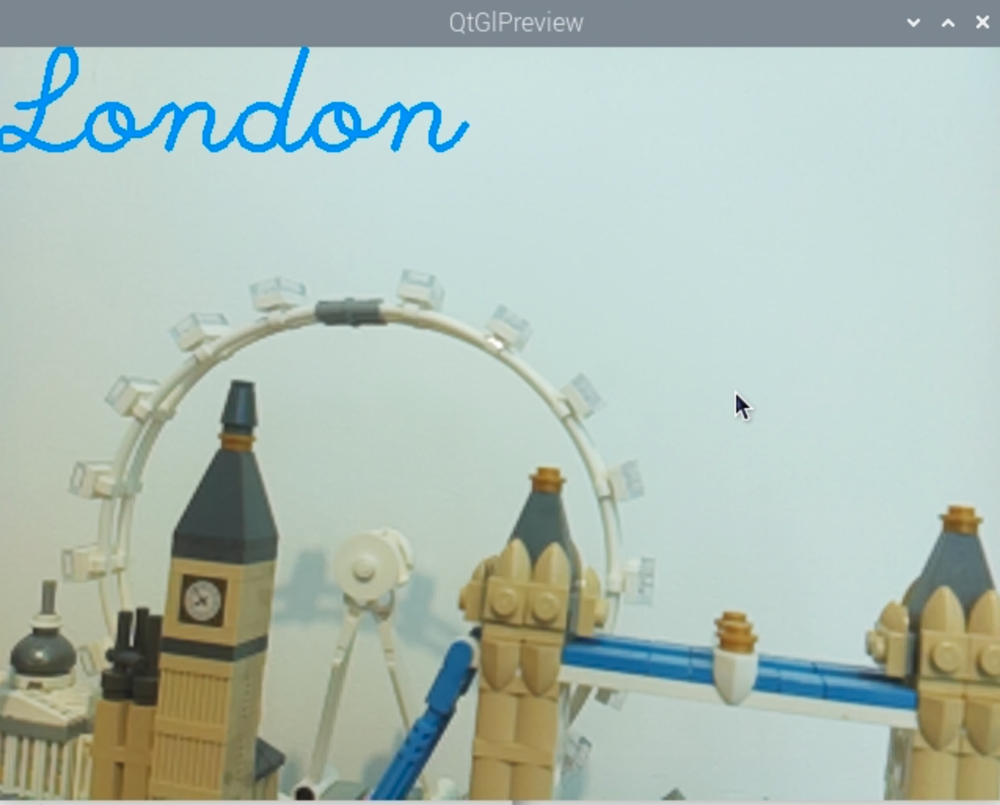

Photo methods
Take a photo
- Takes a photograph using the camera and saves it as a
.jpgimage. - Returns the filename of the image.
take_photo(
filename: str | Path,
gps_coordinates: tuple[tuple[float, float, float, float],
tuple[float, float, float, float]]
) -> str
| Parameter | Data type | Default | Compulsory? | Description |
|---|---|---|---|---|
| filename | str or Path | None | Yes | A file name for a .jpg image. This can also be a path to a file as either a string or a Path object. |
| gps_coordinates | tuple | None | No | GPS coordinates to be associated with the image, specified as a (latitude, longitude) tuple where both latitude and longitude are themselves tuples of the form (sign, degrees, minutes, seconds). This format can be generated from the skyfield library's signed_dms function. |
Example
The image will be saved into the same folder as the Python script, unless a path is specified. In this example, the image will be saved into a photos folder.
This method can also be called as capture_image() and will behave in exactly the same way.
Capture a timelapse sequence
- Take a sequence of
num_imageswith a gap ofintervalbetween each one, and save them asfilenamewith an auto-number. - Optionally,
make_videousing all of the images. - All images will be in
.jpgformat and video in.mp4format.
| Parameter | Data type | Default | Compulsory? | Description |
|---|---|---|---|---|
| filename | str or Path | None | Yes | A file name for a .jpg image. This can also be a path to a file as either a string or a Path object. |
| num_images | int | 10 |
No | How many images to take. |
| interval | int | 1 |
No | How long to wait in between each image, in seconds. |
| make_video | bool | False |
No | Whether to make a .mp4 video of the images. |
It may not be possible for the Raspberry Pi to capture images at the exact interval specified, particularly if the interval value is small.
Example
This will take a sequence of 12 images, with 2 seconds between images, and then make a timelapse video of the images. The video will be called mysequence.mp4.
This method can also be called as take_sequence() and will behave in exactly the same way.
Add an image overlay
- Add an image on top of the preview and to still images captured by the camera.
- Does not overlay the image on video.
| Parameter | Data type | Default | Compulsory? | Description |
|---|---|---|---|---|
| image_path | str | - | Yes | The path to an image to use as the overlay. The image must be in PNG, JPG/JPEG or BMP format. |
| position | tuple | (0,0) |
No | A tuple of x,y coordinates for the position of the top left corner of the image. |
| transparency | float | 0.5 |
No | How transparent the image should be. This can be any value between 0 (completely transparent) and 1 (completely opaque). |
Example
Assuming the file logo.gif exists and is in the same folder as the Python script, this code will add an overlay to previews and images taken with the camera.
Add a text annotation
Adds a text annotation to the preview and to still images captured by the camera. Does not annotate video.
annotate(
text: str,
font: str,
color: str/tuple,
scale: int,
thickness: int,
position: tuple,
bgcolor: tuple,
) -> None
| Parameter | Data type | Default | Compulsory? | Description |
|---|---|---|---|---|
| text | str | "Default Text" |
No | The text to overlay on the image/preview. |
| font | str | "plain1" |
No | The font to use. Available fonts are: plain1, plain2, plain-small, serif1,serif2, serif-small, handwriting1, handwriting2 |
| color | str/tuple | "white" |
No | A colour in RGBA, hex or color string format. (See the colors documentation for more details.) |
| scale | int | 3 |
No | The base size of the font will be multiplied by this number, for example a value of 2 will make it twice as large. |
| thickness | int | 3 |
No | The thickness of the lines used in the font, measured in px. The value must be between 1 and 10. |
| position | tuple | (0, 0) |
No | A pair of x, y coordinates for the top left corner of the text. |
| bgcolor | tuple | None | No | A colour in RGBA, hex or color string format. (See the colors documentation for more details.) |
Example

This will add an annotation to the preview and to any images captured. The annotation may look larger on the preview than captured images due to the resolution difference.
Capture an image as a numpy array
- Takes a photo at full resolution and saves it as an (RGB) numpy array.
- This can be used in further processing using libraries like opencv.
Example
This will capture a numpy array and save it as numpy_img for further processing.